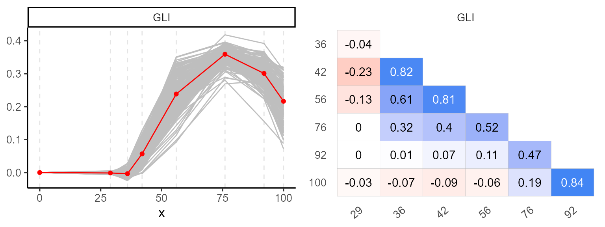
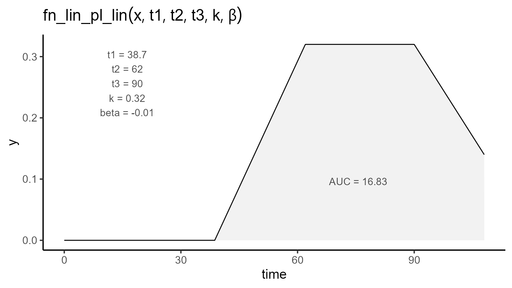
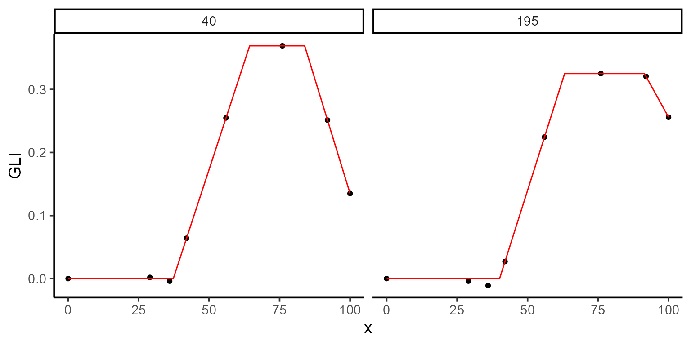
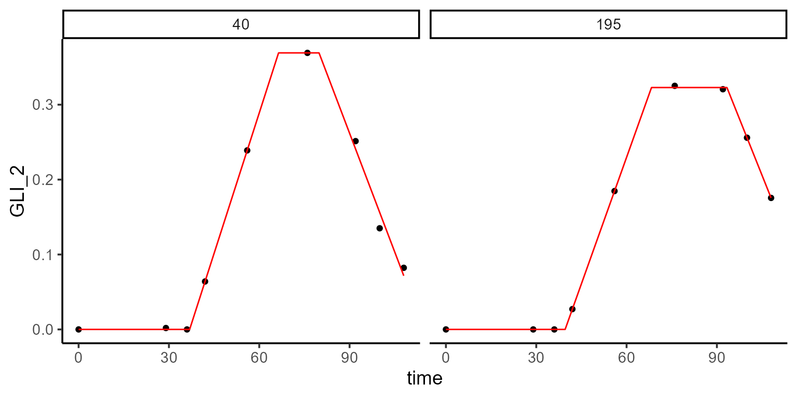
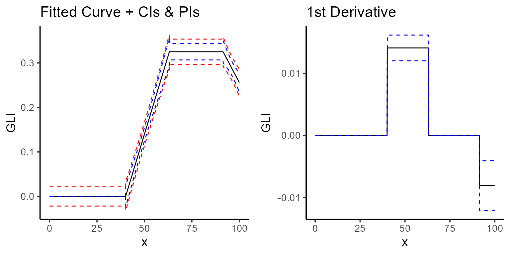

This vignette demonstrates how to apply parameter constraints when modeling biological processes using {flexFitR}. Constraints can help ensure that parameter estimates remain within realistic or biologically meaningful ranges, improving both the interpretability and reliability of model outcomes.
Introduction to Modeling with Constraints
In many biological models, certain relationships between parameters are expected. For example:
- Some parameters should not exceed certain values (e.g., maximum growth rates).
- Some parameters should maintain specific relationships with each other (e.g., one stage occurring before another in time).
This vignette demonstrates how to apply these types of constraints in {flexFitR} to guide the optimization process.
Example Case
For this example, we use the Green Leaf Index (GLI) derived from UAV imagery to model plant emergence, canopy closure, and senescence. The parameters we are interested in include:
- t1: Emergence time
- t2: Canopy closure time
- t3: Senescence onset
Our expectation is that \(0 < t1 < t2 < t3\). We will apply constraints to ensure this relationship hold.
1. Exploring data
We begin with the explorer function, which provides
basic statistical summaries and visualizations to help understand the
temporal evolution of each plot.
p1 <- plot(explorer, type = "evolution", return_gg = TRUE, add_avg = TRUE)
p2 <- plot(explorer, type = "x_by_var", return_gg = TRUE)
ggarrange(p1, p2, nrow = 1)
| var | x | Min | Mean | Median | Max | SD | CV | n | miss | miss% | neg% |
|---|---|---|---|---|---|---|---|---|---|---|---|
| GLI | 0 | 0.00 | 0.00 | 0.00 | 0.00 | 0.00 | NaN | 196 | 0 | 0 | 0.00 |
| GLI | 29 | -0.01 | 0.00 | 0.00 | 0.01 | 0.00 | -2.01 | 196 | 0 | 0 | 0.69 |
| GLI | 36 | -0.02 | 0.00 | 0.00 | 0.03 | 0.01 | -2.90 | 196 | 0 | 0 | 0.69 |
| GLI | 42 | 0.00 | 0.06 | 0.05 | 0.13 | 0.03 | 0.46 | 196 | 0 | 0 | 0.02 |
| GLI | 56 | 0.09 | 0.24 | 0.24 | 0.35 | 0.05 | 0.21 | 196 | 0 | 0 | 0.00 |
| GLI | 76 | 0.27 | 0.36 | 0.36 | 0.42 | 0.02 | 0.06 | 196 | 0 | 0 | 0.00 |
| GLI | 92 | 0.16 | 0.30 | 0.31 | 0.39 | 0.03 | 0.11 | 196 | 0 | 0 | 0.00 |
| GLI | 100 | 0.07 | 0.22 | 0.22 | 0.32 | 0.05 | 0.23 | 196 | 0 | 0 | 0.00 |
2. Regression function
After exploring the data, we define the regression function. Here we use a linear-plateau-linear function with five parameters: t1, t2, t3, k, and \(\beta\). The function can be expressed mathematically as follows:
\[\begin{equation} f(t; t_1, t_2, t_3, k, \beta) = \begin{cases} 0 & \text{if } t < t_1 \\ \dfrac{k}{t_2 - t_1} \cdot (t - t_1) & \text{if } t_1 \leq t \leq t_2 \\ k & \text{if } t_2 \leq t \leq t_3 \\ k + \beta \cdot (t - t_3) & \text{if } t > t_3 \end{cases} \end{equation}\]
plot_fn(
fn = "fn_lin_pl_lin",
params = c(t1 = 38.7, t2 = 62, t3 = 90, k = 0.32, beta = -0.01),
interval = c(0, 108),
color = "black",
base_size = 15
)
To impose constraints, we can reformulate the function. For instance, if we want to ensure that \(t3 \geq t2\), we introduce dt as the difference between t3 and t2:
\[\begin{equation} f(t; t_1, t_2, dt, k, \beta) = \begin{cases} 0 & \text{if } t < t_1 \\ \dfrac{k}{t_2 - t_1} \cdot (t - t_1) & \text{if } t_1 \leq t \leq t_2 \\ k & \text{if } t_2 \leq t \leq (t_2 + dt) \\ k + \beta \cdot (t - (t_2 + dt)) & \text{if } t > (t_2 + dt) \end{cases} \end{equation}\]
To enforce \(dt > 0\) and \(\beta < 0\) (i.e., a non-positive slope at the end of the curve), we specify bounds in the modeler function as follows:
3. Fitting Models with Constraints
We fit the model with these constraints by passing lower and upper
arguments to modeler. In this vignette, we fit the model
for plots 195 and 40 as a subset of the total 196
plots.
mod_1 <- dt_potato |>
modeler(
x = DAP,
y = GLI,
grp = Plot,
fn = "fn_lin_pl_lin2",
parameters = initial_vals,
lower = lower_bounds,
upper = upper_bounds,
method = c("nlminb", "L-BFGS-B"),
subset = c(195, 40)
)Here:
- x specifies the days after planting (DAP),
- y is the GLI variable to be modeled
- grp enables group analysis across multiple plots
- parameters are the initial parameter values
- method specifies the optimization methods to evaluate
After fitting, we can inspect the model summary and visualize the fit
using the plot function:
print(mod_1)
#>
#> Call:
#> GLI ~ fn_lin_pl_lin2(DAP, t1, t2, dt, k, beta)
#>
#> Sum of Squares Error:
#> Min. 1st Qu. Median Mean 3rd Qu. Max.
#> 1.961e-05 4.939e-05 7.918e-05 7.918e-05 1.090e-04 1.388e-04
#>
#> Optimization Results `head()`:
#> uid t1 t2 dt k beta sse
#> 40 37.3 64.4 19.5 0.369 -0.01454 1.96e-05
#> 195 40.1 63.1 28.3 0.325 -0.00809 1.39e-04
#>
#> Metrics:
#> Groups Timing Convergence Iterations
#> 2 0.6269 secs 100% 311 (id)
kable(mod_1$param)| uid | t1 | t2 | dt | k | beta | sse |
|---|---|---|---|---|---|---|
| 40 | 37.30529 | 64.38853 | 19.51168 | 0.3691396 | -0.0145414 | 0.0000196 |
| 195 | 40.07586 | 63.14681 | 28.29370 | 0.3251456 | -0.0080876 | 0.0001388 |
3.1. Extracting model coefficients and uncertainty measures
Once the model is fitted, we can extract key statistical information, such as coefficients, standard errors, confidence intervals, and the variance-covariance matrix for each plot. These metrics help evaluate parameter reliability and assess uncertainty.
The functions coef, confint, and
vcov are used as follows:
- coef: Extracts the estimated coefficients for each group.
- confint: Provides the confidence intervals for the parameter estimates.
- vcov: Returns the variance-covariance matrix, which can be used to understand the relationships between the estimates and their variability.
coef(mod_1, id = 40)
#> # A tibble: 5 × 6
#> uid coefficient solution std.error `t value` `Pr(>|t|)`
#> <dbl> <chr> <dbl> <dbl> <dbl> <dbl>
#> 1 40 t1 37.3 0.258 145. 0.000000727
#> 2 40 t2 64.4 0.371 174. 0.000000422
#> 3 40 dt 19.5 0.626 31.2 0.0000725
#> 4 40 k 0.369 0.00256 144. 0.000000733
#> 5 40 beta -0.0145 0.000452 -32.2 0.0000660
confint(mod_1, id = 40)
#> # A tibble: 5 × 6
#> uid coefficient solution std.error ci_lower ci_upper
#> <dbl> <chr> <dbl> <dbl> <dbl> <dbl>
#> 1 40 t1 37.3 0.258 36.5 38.1
#> 2 40 t2 64.4 0.371 63.2 65.6
#> 3 40 dt 19.5 0.626 17.5 21.5
#> 4 40 k 0.369 0.00256 0.361 0.377
#> 5 40 beta -0.0145 0.000452 -0.0160 -0.0131
vcov(mod_1, id = 40)
#> $`40`
#> t1 t2 dt k beta
#> t1 6.640964e-02 -4.684756e-02 0.0468605417 -7.841952e-08 -8.219226e-09
#> t2 -4.684756e-02 1.377112e-01 -0.1707231494 4.797169e-04 2.416003e-08
#> dt 4.686054e-02 -1.707231e-01 0.3915152910 -9.292910e-04 -1.699689e-04
#> k -7.841952e-08 4.797169e-04 -0.0009292910 6.536323e-06 8.415252e-11
#> beta -8.219226e-09 2.416003e-08 -0.0001699689 8.415252e-11 2.042313e-074. Plotting options
Using type = 2 in the plot function
generates a coefficients plot. This allows us to view the estimated
coefficients and their associated confidence intervals for each
group.

Another option (type = 4) shows the fitted curve (black
line), confidence interval (blue-dashed line), and prediction interval
(red-dashed line). Additionally, setting type = 5 displays the first
derivative, indicating the rate of change over time.
a <- plot(mod_1, type = 4, color = "black", title = "Fitted Curve + CIs & PIs")
b <- plot(mod_1, type = 5, color = "black")
ggarrange(a, b)